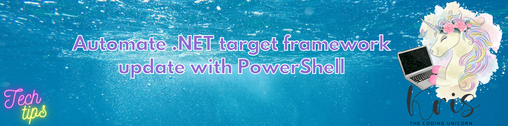

Automate .NET Target Framework Update With PowerShell

With all the active development in the .NET world many of us have faced a situation where we need to update .NET target framework more frequently in order to be able to keep up, but at the same time to be able to utilize all the goodies .NET has to offer. It's not a big deal when you have 1, 2, 10 projects but when you have 300+ projects that need to be updated? Then it can become a pretty boring and time-consuming process. And what's boring must always be automated, right? ;-)
That's what I thought of as well when I had to port 300+ projects from .NET 5 to .NET 6 - and that's when I decided to automate this task! I have created a PowerShell script which can let you add and/or remove .NET target framework across all of the projects in the specific location except for the ones you decide to exclude.
Script is available on my GitHub: guidemetothemoon - Update-DotnetFramework
Script usage highlights
- The script will only update projects defined in the new project format. Projects using the legacy project format will not be taken into consideration and information about those projects will be logged by the script.
- The script will search both for .csproj and .vbproj files but you can always exclude specific projects from update.
- I used the script to update 300+ projects and it took around 10 seconds to complete so you should be able to complete the update quite quickly even in a large code base.
- Both
FrameworksToAddandFrameworksToRemoveparameters support multiple values as long as those are comma-separated. ProjectsToExcludealso supports comma-separated multiple values and wildcards!- Location where the script is triggered from will be used as default to search for the projects to update unless
ProjectLocationis provided. - Use
BuildProjectsswitch if you want to build your projects once the update is complete. If private NuGet feed is in use, the script will attempt to authenticate you interactively but you can also modify the script to use a NuGet config file instead.
How to run a script:
A few examples are provided in the top of the script itself but I'll demonstrate a few here as well:
- Add
net6.0target framework and removenet5.0from allcsprojandvbprojprojects inrepo1directory:
Update-DotnetFramework.ps1 -FrameworksToAdd net6.0 -FrameworksToRemove net5.0 -ProjectLocation ./repo1
- Only add
net6.0-windowstarget framework tocsprojprojects, excludevbprojand all test projects in default script location:
Update-DotnetFramework.ps1 -FrameworksToAdd net6.0-windows -ProjectsToExclude *Test*,*.vbproj
- Only remove
net6.0-windowsandnet5.0target framework from all projects inrepo2directory and build all projects once complete:
Update-DotnetFramework.ps1 -FrameworksToRemove net6.0-windows,net5.0 -ProjectLocation ./repo2 -BuildProjects
Hope that this script will also help you spare some time and reduce manual work in the same way as it helps me every single time :)
To get an overview of all valid .NET frameworks, check out Microsoft documentation: Target frameworks in SDK-style projects.
Thanks for reading and till next tech tip ;)